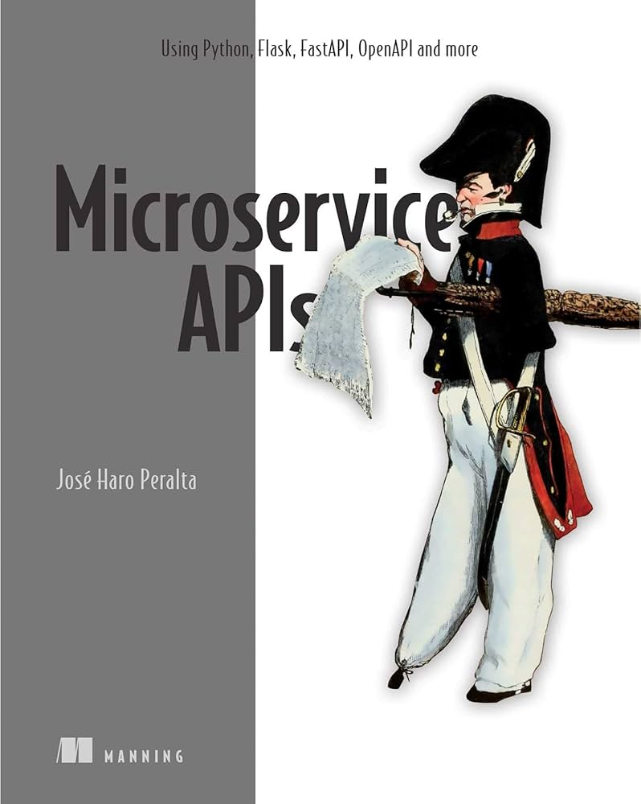

Books
Microservice APIs

Author:José Haro Peralta
Pages:440
Rating: (4.6/5) - 150 Reviews
Description:Microservice APIs gathers proven techniques for creating and building
easy-to-consume APIs for microservices applications. Rich with proven advice and Python-based
examples, this practical book focuses on implementation over philosophy. You’ll learn how to build
robust microservice APIs, test and protect them, and deploy them to the cloud following principles
and patterns that work in any language.
Read it
HTML5 for .NET Developers

Authors:Jim Jackson II and Ian Gilman
Pages:416
Rating: (4.3/5) - 128 Reviews
Description:HTML5 for .NET Developers teaches you how to blend HTML5 with your
current .NET tools and practices. You'll start with a quick overview of the new HTML5 features and
the semantic markup model. Then, you'll systematically work through the JavaScript APIs as you learn
to build single page web apps that look and work like desktop apps. Along the way, you'll get tips
and learn techniques that will prepare you to build "metro-style" applications for Windows 8 and WP
8.
Read it
Get Programming with JavaScript

Authors:John R. Larsen
Pages:432
Rating: (4.1/5) - 98 Reviews
Description:Are you ready to start writing your own web apps, games, and programs?
You're in the right place! Get Programming with JavaScript is a hands-on introduction to programming
for readers who have never written a line of code. Since you're just getting started, this friendly
book offers you lots of examples backed by careful explanations. As you go along, you'll find
exercises to check your understanding and plenty of opportunities to practice your new skills. You
don't need anything special to follow the examples-just the text editor and web browser already
installed on your computer. We even give you links to working online code so you can see how
everything should look live on your screen.
Read it
Usability Matters

Authors:Matt Lacey
Pages:392
Rating: (4.4/5) - 133 Reviews
Description:Usability Matters is a guide for developers wrestling with the subtle
art of mobile design. With each expertly presented example, app developer and designer Matt Lacey
provides easy-to-implement techniques that instantly boost your design IQ. Skipping highbrow design
theory, he addresses topics like gracefully handling network dropouts and creating intuitive data
inputs. Read this book and your apps will look better, your users will be happier, and you might
even get some high-fives at the next design review.
Read it
Lectures
.NET Microservices

Editor:Les Jackson
Duration:11:05:57
Rating: (4.4/5) - 77 Reviews
Description:In this step-by-step tutorial Les Jackson take you through an
introduction on
building microservices using .NET. As the name suggests you build everything completely from start
to
finish –with the full scope of the course outlined in the time-stamp section below. However, at a
high-level we’ll cover:
- Building two .NET Microservices using the REST API pattern
- Working with dedicated persistence layers for both services
- Deploying our services to Kubernetes cluster
- Employing the API Gateway pattern to route to our services
- Building Synchronous messaging between services (HTTP & gRPC)
- Building Asynchronous messaging between services using an Event Bus (RabbitMQ)
Watch Now
RESTful API

Editor:Evan Gudmestad
Duration:58:17
Rating: (4.5/5) - 162 Reviews
Description:In this video, viewers are introduced to the fundamentals of RESTful
APIs, exploring how they enable communication between different applications. The tutorial covers
key concepts such as HTTP methods (GET, POST, PUT, DELETE), endpoints, request and response
structures, and the principles of REST architecture. Designed for beginners, this guide breaks down
each component of RESTful APIs in an accessible way, helping viewers understand how to build and
work with APIs effectively. By the end, they’ll have a clear grasp of how RESTful APIs function and
how to start implementing them in real-world projects.
Watch Now
Java Tutorial

Editor:Mosh Hamedani
Duration:2:30:47
Rating: (4.8/5) - 181 Reviews
Description:In this beginner-friendly Java tutorial, viewers are guided through the
essentials of Java programming, making it easy to get started with coding. The video covers
fundamental concepts like variables, data types, operators, and control structures, all explained in
clear, straightforward language. Designed for complete beginners and those wanting to expand their
skills, this tutorial provides a solid foundation in Java syntax and basic programming logic. By the
end, viewers will be ready to take the next steps in their Java programming journey!
Watch Now
Web Security Model

Editor:James Mickens
Duration:1:22:48
Rating: (4.1/5) - 56 Reviews
Description:In this video, viewers dive into the essentials of the Web Security
Model, learning how modern web applications are protected against various online threats. The
tutorial explains core concepts such as authentication, authorization, HTTPS, same-origin policy,
cookies, and token-based security. Designed for beginners and those interested in web development,
this video provides a foundational understanding of how security protocols safeguard user data and
application integrity. By the end, viewers will have a clearer understanding of web security
principles and best practices for building secure web applications.
Watch Now